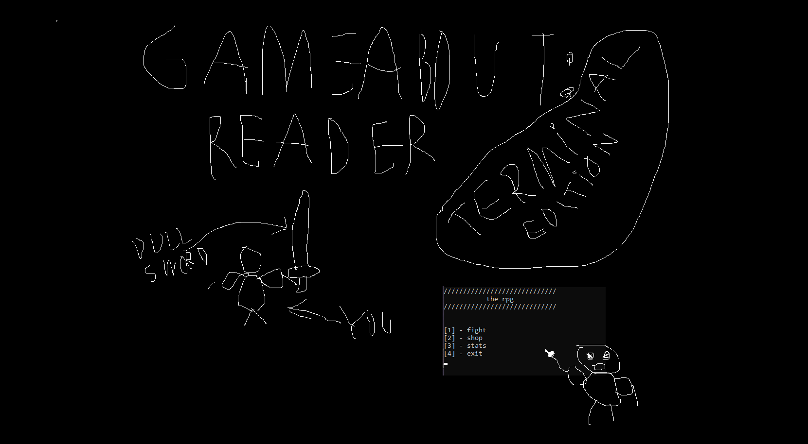

Game About Reader

{kind=link}
{kind=link}
{kind=link}
Info
So this the first ever project managed to finish, and even play through it to prove its playability. It lets you progress through with equipment of multiple categories of your choice. About 3 weapons classes and 3 weight classes of armour. 3 types of consumables/potions and a mediocre range of trinkets with each having different effect provoked by different circumstances. It's one of my playable projects. It even got little bugfix patch, to ensure it should be playable.
What it has:
- Classes
- Polymorphism
- Lambda expressions
- File input and output
- Basic data structures
Tools used:
- Microsoft Visual Studio (C++)
What I learned from it:
- Most of the C++ fundamentals
- Classes and most basic theory behind it
- Writing to files
- That creating global functions and variables without good reason behind it a bad idea
My biggest mistakes:
- Every key aspect of the program is a global function
- That I made the game hold all of the equipment in the global vector arrays
- All of the code for the shop